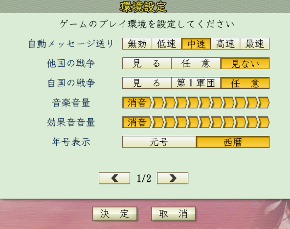

環境設定の概念
環境設定とは、

の画面のパラメータのことです。
SDKでこれらパラメータを扱うことできます。
このオブジェクトのプロパティは全て読み取り専用となっています。
使い処
これら環境設定の値を使用するシーンは少ないと思いますが、
例えば、ゲーム内のSEの代わりに、ゲーム外の仕組みを使ってSEを鳴らしたいと思ったとして、
ゲーム内のSEの音量の設定に従って変動させるためには、
この環境設定に従って外部APIのSEの音量を連動させるといったことが可能となります。
使用例
その他
環境設定に関する主な所は以上となります。
他にもプロパティがありますので、
の「環境設定.h」や「環境設定列挙.h」などを参照してください。